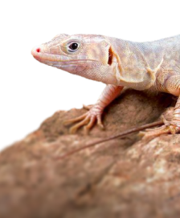
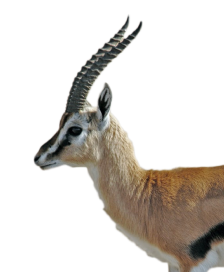

Close

Musandam Peninsula
Northern Oman
The country in the north of the main part of Oman is mountainous, Al Hajar Mountains reaching almost to 3,000 m. They run parallel to the coast of the Gulf of Oman, with a narrow coastal plain in between. This is crossed by a number of wadis and has several oases.
-

Blue-Tailed Lizard
-

Arabian Sand Gazelle